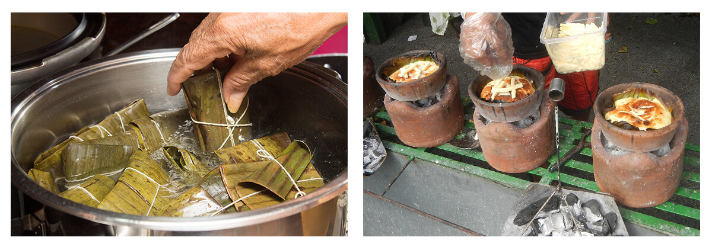

In the coming Christmas, in addition to the usual global festive stamp, we have also prepared 20 regional stamps introducing Christmas dishes from all over the world. Apart from the familiar dishes that many people know, such as British Christmas Pudding, Australian White Christmas and Italian Panettone, we also cover some less popular dishes, such as Venezuelan Hallaca (a type of food wrapped in banana leaves), Filipino Bibingka (a kind of cake baked with glutinous rice flour) and so on 😋
(L) Venezuelan Hallaca (R) Filipino Bibingka
When we received this idea from Ruth (She is also a Filipino translation volunteer for SLOWLY. Thank you!), we all liked it and started preparations without hesitation.
During the information collection process, we feel as if we have travelled all over the world to celebrate Christmas. Other than food, we also found some interesting traditions. For instance, we learned that Catalan in Spain would prepare a Tió de Nadal starting on December 8th, feed it food and water, and cover it with a blanket to keep it warm. Then, on Christmas Eve, the children will hit the tió with wooden sticks and sing the ‘Caga tió’ song. The lyrics literally mean ‘Shit, log!’. Finally, after a round of beating, the children will receive Christmas gifts from under the blanket.

Our team members attach great importance to cultural diversity and are excited whenever we learn a new tradition. We believe that SLOWLY users are also curious about the world, and food (and stamps) is a great way to bring us closer together.
Why do we need to learn about the cultures of different places?
By knowing the cultures of other countries, we can get to know each other on a deeper level: take into consideration where your pen pal comes from, their traditions and values. Sometimes, you will notice that different cultures have similar origins or interconnected historical relationships, and you can even relearn your own culture from them. Learning to accept and embrace cultural differences can also broaden one’s horizons and mind. Perhaps the next time you travel around the world, you will find that the various moments from making pen pals will bring you a different experience.
Collect Christmas stamps from all over the world